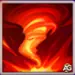
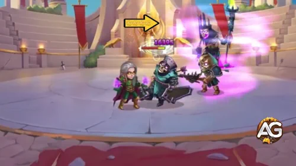
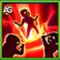
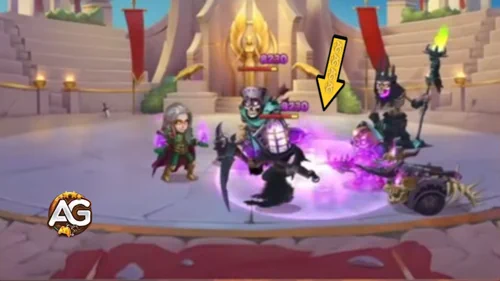
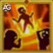
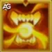
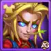
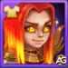
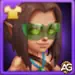
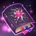

Conceited yet undeniably gifted, Kai has returned with a powerful rework that makes him deadlier than ever. This Chaos mage not only devastates enemies with blazing fire pillars and explosive magic bombs but also sustains himself with enhanced vampirism.
With his relic in hand, the new Kai becomes unstoppable — a true force of destruction in the Middle Line. Players eager to master his potential will find him shining brightest alongside heroes like Dorian, Galahad, and K’arkh. Ready to unleash the reborn Mage of Chaos?
Kai Guide - Hero Wars Alliance, a game developed by Nexters.
Who Is Kai?
Kai is a Chaos mage who thrives in the Middle Line, balancing high magical damage with self-sustain through vampirism. His rework has transformed him into a strategic powerhouse, capable of turning battles with devastating AoE spells and newfound durability.
Kai’s biggest strength lies in his ability to blend offense and sustain. His rework not only boosts his raw magical output but also grants improved self-healing, allowing him to stay in the fight longer.
When paired with lifesteal enhancers like Dorian, or frontliners such as Galahad, Kai becomes a relentless engine of damage. His synergy with K’arkh also makes him a top pick in burst-heavy teams.
Whether you’re pushing through the Tower or aiming to climb Arena rankings, mastering Kai’s reworked abilities will give you a major edge. He is no longer just a situational mage — he’s now a reliable damage dealer and team player in Hero Wars Alliance.
Kai Pros and Cons - Hero Wars Alliance
✅ Pros
High Magic Damage: Strong nuker with Magic Attack scaling and Magic Penetration glyphs.
Ultimate Impact: Wanderer’s Mantle provides powerful burst damage to the enemy team.
Vampirism Passive Skill: 120% Vampirism increases his survivability and sustain during battles.
Interrupts Enemy Skills: His knock-up effect can disrupt enemy abilities when launched into the air.
Good Combo Potential: Works well with heroes like K’arkh for devastating combos.
Scales Well: Intelligence glyphs and artifacts boost his overall effectiveness as he evolves.
⌠Cons
Fragile: Can be eliminated quickly if focused, even with health glyphs.
Team-Dependent: Needs protection from allies to unleash full damage potential.
Easily Neutralized: Andvari teams can counter him effectively, reducing his impact.
Does Not Debuff Enemies: Lacks additional debuff abilities, limiting utility against some teams.
Low Magic Defense Priority: Vulnerable to enemy mages due to weaker defensive glyphs.
Kai Legendary Relic Skills Upgrade Priority - Hero Wars Alliance
Discover the best order to evolve Kai’s skills after his rework in Hero Wars Alliance, explained step by step for all players.

1st – Fetters of the Wind
Launches a hurricane that knocks enemies up and deals damage: Damage: 156791 (80% Mag. atk. + 18100).
Early on, the control effect helps interrupt enemies, but against high-level opponents its reliability drops.
Evolution Priority:Medium – Useful for crowd control, but damage and effectiveness decline at higher levels.

Fetters of the Wind, Hero Wars Alliance.
Important Note: Kai’s ultimate skill, Fetters of the Wind, did not receive a Relic upgrade during the rework. Unlike most heroes, whose ultimate is their defining and strongest ability, Kai’s ultimate only got a minor buff. Instead, the new Relics focus on enhancing his secondary skills, mostly targeting enemies in the middle line. While this adds more offensive pressure, it leaves Kai vulnerable to displacement protection from heroes like Andvari, who can completely shut down his knock-up control. This design choice makes the rework somewhat questionable, as Kai’s most important skill remains unchanged, raising doubts about his long-term effectiveness against strong counters.

2nd – Breath of the Abyss
Creates a fiery pillar at the center of the enemy team, burning them down. Magic Damage: 116018 (60% Mag. atk. + 12000).
Evolution Priority:Very High – This is Kai’s core source of AoE damage. Boosting it early maximizes team fight pressure.

Breath of the Abyss, Hero Wars Alliance.

2nd – Enhanced Legendary Relic: Breath of the Abyss
Creates a second fiery pillar at the same spot. Magic Damage: 58009 (30% Mag. atk. + 6000).
Evolution Priority:Very High – Doubling the attack transforms Kai into a destructive mage capable of wiping teams.
3rd – Explosive Sphere
Hurls a fire orb at the enemy with the lowest Magic Defense. Magic Damage: 96432 (50% Mag. atk. + 9750). Explosion: 182364 (Mag. atk. + 9000).
Deals strong single-target damage and punishes clustered foes.
Evolution Priority:High – Excellent burst skill, especially against low-Magic Defense heroes.
Adds the Living Bomb effect to the target. Upon death, they explode and deal damage to all enemies.
Evolution Priority:Medium High – The added chain reaction is powerful but situational, depending on timing and enemy setup.
4th – Stolen Life
Passive ability. Boosts vampirism up to 120%. Allows Kai to heal while damaging enemies.
Evolution Priority:High – Sustains Kai during battles, letting him stay alive while unleashing spells.
Stolen Life, Hero Wars Alliance.
5th – Legendary Relic: Living Bomb
Every 15s, applies Living Bomb to an enemy: Damage: 317356 (50% Health).
Upon death, affected targets explode, damaging all enemies.
Evolution Priority:Very High – This relic turns fights in Kai’s favor by chaining death explosions across the battlefield.

6th – Legendary Relic: Bloody Boost
Each time health is restored through vampirism, the Hero’s primary stat increases for 5s (stacking up to 3x). Stat Boost: 1734 (1% Mag. atk.)
Evolution Priority:Low – Nice for extra scaling, but less impactful compared to Kai’s explosive core abilities.
Best Skin for Kai Hero Wars Alliance
Find out the best Kai skin order in Hero Wars Alliance. Learn which skins to evolve first to maximize his battle power and team impact.

Harvest Skin+ (Magic Attack +21,300)
This is Kai’s strongest offensive skin, massively boosting his Magic Attack and maximizing the impact of all his abilities.
Evolution Priority:Top Priority – The best skin to evolve first for maximum damage potential.
Default Skin (Intelligence +1,365)
Each point of Intelligence gives Kai +3 Magic Attack, +1 Magic Defense, and +1 Physical Attack since Intelligence is his main stat. This skin enhances all his skills by boosting his core attribute directly.
Evolution Priority:Very High – Still essential as it amplifies every part of Kai’s kit.

Solar Skin (Magic Penetration +10,650)
Magic Penetration helps Kai bypass enemy Magic Defense, ensuring his fire pillars and orbs deal consistent damage against tougher teams.
Evolution Priority:High – A great secondary skin to push damage, especially in PvP against tanky or magic-resistant opponents.
Winter Skin (Magic Attack +10,665)
This skin provides a raw boost to Magic Attack, amplifying the direct damage of his skills, particularly Breath of the Abyss and Explosive Sphere.
Evolution Priority:Medium High – A solid option for increasing damage, but less valuable than Magic Penetration when enemies stack defenses.
Champion’s Skin (Health +106,871)
This skin greatly improves Kai’s survivability. More health allows him to benefit longer from vampirism and sustain during extended fights.
Evolution Priority:Medium – Useful if Kai dies too quickly in battles, but not as impactful as damage-focused skins.

Beach Skin (Magic Defense +10,650)
This skin reduces incoming damage from enemy mages. It has situational value but doesn’t directly enhance Kai’s offensive role.
Evolution Priority:Low – Only level this if you face mage-heavy teams frequently; otherwise, focus on offensive and core attribute skins first.
Kai with Summer skin, Hero Wars Alliance.
Kai Artifact Evolution Priority Hero Wars Alliance
Understanding Kai’s artifact priority in Hero Wars Alliance is essential to maximize his magic damage and team support. His artifacts boost his ultimate impact, magic penetration, and core stats, but they do not all provide equal value in battle. Below is the correct priority order with explanations.
1st – Weapon Artifact: Wanderer’s Mantle
Triggers whenever Kai casts his ultimate, granting a powerful team-wide Magic Attack buff for 9 seconds.
Stats: Magic Attack +21,360.
Activation Chance: 100%.
This artifact is directly tied to his strongest ability and benefits the entire team’s DPS, making it his most valuable artifact.
Evolution Priority:Very High – Prioritize this first since it scales both Kai’s and allies’ offensive power every time his ultimate is used.

2nd – Book Artifact: Manuscript of the Void
Boosts both Magic Penetration and Magic Attack, ensuring Kai can pierce through enemy Magic Defense.
Stats: Magic Penetration +10,680; Magic Attack +5,340.
This artifact is essential for Kai to remain effective against high-defense tanks and magic-resistant teams.
Evolution Priority:High – Level this after the weapon since penetration is critical for consistent damage output in PvP and late-game campaigns.
3rd – Ring Ring of Intelligence Artifact
Increases Kai’s main stat, Intelligence, which passively scales his magic power.
Stats: Intelligence +3,990.
Each Intelligence point grants Kai +3 Magic Attack, +1 Magic Defense, and +1 Physical Attack. While useful, it has less immediate battle impact compared to the first two artifacts.
Evolution Priority:Medium – Provides solid scaling but should be the last to upgrade as its impact is slower and individual, not team-wide.
Kai Glyph Evolution Priority
Kai’s glyph priority in Hero Wars Alliance is centered around maximizing his ultimate and skill damage output. Magic Attack and Penetration are crucial, while survivability glyphs help him last longer in fights. Below is the correct order of importance with reasons for each choice.
1st – Magic Attack Glyph
Increases Kai’s raw damage across all skills, especially his ultimate, which is his most impactful ability.
Level 80 Stats: Magic Attack +12,850.
Evolution Priority:Very High – Core to Kai’s role as a magic damage dealer, this should always be upgraded first.
2nd – Magic Penetration Glyph
Ensures Kai’s skills bypass enemy Magic Defense, allowing him to remain effective against tanky heroes and high-resistance teams.
Level 80 Stats: Magic Penetration +12,850.
Evolution Priority:High – Upgrade right after Magic Attack to keep his damage consistent in late-game and PvP battles.
3rd – Intelligence Glyph
Boosts Kai’s primary stat, scaling his Magic Attack, Magic Defense, and even some Physical Attack.
Level 80 Stats: Intelligence +2,110.
Evolution Priority:Medium – Important for overall scaling, but less urgent than direct damage glyphs.
4th – Health Glyph
Increases survivability by boosting HP, helping Kai withstand bursts and stay alive to cast his ultimate.
Level 80 Stats: Health +122,800.
Evolution Priority:Medium-Low – Useful for keeping Kai alive longer, but not as impactful as boosting his offensive power.
5th – Magic Defense Glyph
Increases resistance to magic damage, offering situational protection against mage-heavy teams.
Level 80 Stats: Magic Defense +12,850.
Evolution Priority:Low – Lowest priority since Kai benefits more from offense and general survivability than from magic resistance alone.
Analysis of Kai's Talismans in Hero Wars Alliance
Kai's Talisman is an essential piece to increase his statistics and improve his performance in battle. With the right talisman, Kai can strengthen his magical attack and magical penetration, thus increasing his damage power against enemies in Hero Wars Alliance.
Talisman of Direction (First Talisman)
This Talisman provides Kai with increased Intelligence, Magic Attack, and Magic Defense.
These boosts improve his magical output and resilience against enemy mages.
Direction Talisman
Slot
Statistic
Points
0
Intelligence
+2.000
1
Magical Attack
+6.000
2
Magical Attack
+6.000
3
Magical Attack
+6.000
Kai with Talisman of Direction, Hero Wars.
The Talisman of Direction is therefore more defensive,
helping Kai mitigate incoming magic damage, while also enhancing his offensive capabilities through magic.
Talisman of Ambition (Second Talisman)
The second Talisman focuses on Magic Penetration and Armor. Magic Penetration allows Kai to deal
significantly more damage by bypassing enemies' magical defenses, making this Talisman more offensive.
Kai with Talisman of Ambition, Hero Wars.
Additionally, the increase in
Armor boosts Kai's survivability against physical damage dealers, making him a better choice against teams that rely on physical attackers.
Synergy with K'arkh
The main advantage of the Talisman of Ambition lies in its Magic Penetration, which provides significant synergy
with K'arkh, particularly against teams featuring Andvari. Andvari is often used to counter K'arkh's knock-up attacks,
so pairing Kai with K'arkh helps to eliminate Andvari more effectively.
Kai's magic penetration can break through Andvari's defenses,
allowing K'arkh to follow up with his devastating physical attacks. This combination works well to dismantle teams relying on physical protection,
giving K'arkh an easier path to dominate the battlefield.
How Kai's Talismans Enhance His Role
In summary, while Kai won't become a top-tier hero with the new Talismans, the Talisman of Ambition stands out when used alongside K'arkh,
especially against teams featuring Andvari. The synergy between Kai's magic penetration and K'arkh's physical damage makes them a formidable duo
in certain PvP matchups.
Kai vs Hydra
Kai is not a great hero against hydras, but his vampirism ability can make him stay alive longer against hydras.
It is also possible to create a Kai + Dorian + Orion combo on the hydras, as Kai's magic attack bonus in combination with Orion's magic penetration can cause good damage.
Video: Kai Rework Secrets: Best Teams Revealed! | Hero Wars Alliance
Conclusion - Kai Hero Wars Alliance
Kai is a high-damage mage whose strength lies in his ultimate skill, Vampirism, and powerful magic combos with allies like K’arkh.
While he can disrupt enemy abilities and deal devastating damage, his survivability and team dependence make positioning and strategy crucial.
Focusing on evolving his Magic Attack, Penetration, and core glyphs will maximize his effectiveness, but players should be aware of counters like Andvari teams.
With proper support and the right artifacts, Kai can dominate mid-line battles and be a key contributor to your magic-heavy team composition.
About the Author
Alexandre Domingos holds a postgraduate degree in Engineering and works as a Production Supervisor. In his spare time, he explores the gaming world as a YouTuber and blogger at Alexandre Games, combining his passion for technology and strategy. He has been immersed in gaming since the age of 5, starting on classic platforms like MSX, Master System, Nintendo, and even an old 286 PC. Since 2019, Alexandre has also been playing Hero Wars and Mobile Legends, among other mobile games, creating guides, tutorials, and analyses for the community.
Video suggestion
Video: Kai Rework Hero Wars Alliance – Are the new Relics worth investing in?
Did you like our Kai Rework Guide for Hero Wars Mobile? Is there something you didn't understand or would like to suggest changes to? We invite you to join our comment section on the Alexandre Games Blog page. Feel free to express your opinion, clarify your doubts, and share your suggestions. Click the button below to get started:


 Nebula Hero Wars Mobile Guide
Nebula Hero Wars Mobile Guide Unleashing the Power of Oya: A Guide to Dominate in Hero Wars Alliance
Unleashing the Power of Oya: A Guide to Dominate in Hero Wars Alliance